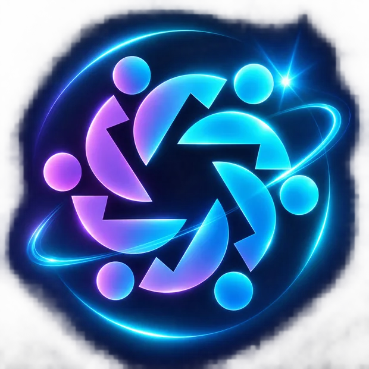
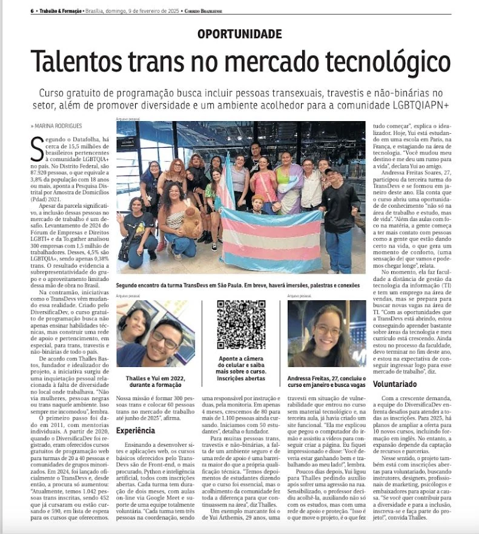

Sobre o MeetingTimer
Uma ferramenta simples para dar tempo a cada conversa, nascida da prática de programação e mentoria em uma comunidade que conecta tecnologia e impacto social.
Como nasceu
O MeetingTimer, ou Cronômetro de Pautas, nasceu na mentoria da DiversificaDev. O projeto foi desenvolvido na prática, em HTML, CSS e JavaScript, durante o processo de ensino e aprendizagem.
O aplicativo é gratuito, funciona direto no navegador e ajuda quem facilita reuniões a dividir o tempo entre os assuntos. Não pede cadastro e não usa banco de dados.
A DiversificaDev

A DiversificaDev é uma iniciativa de tecnologia, formação gratuita, diversidade e inclusão. Sua atuação busca ampliar oportunidades para pessoas trans, travestis, não binárias e outros grupos sub-representados, fortalecendo vínculos e redes de apoio.
A trajetória apresentada em seu site começa com uma mentoria realizada por Thalles em 2011. O projeto cresceu a partir do propósito de abrir caminhos para mais pessoas na tecnologia.
As formações gratuitas cobrem áreas como as abaixo. Turmas, inscrições e ofertas podem mudar, então consulte a página oficial para ver o que está disponível no momento.
Na imprensa

Talentos trans no mercado tecnológico
Uma reportagem do Correio Braziliense, publicada em 9 de fevereiro de 2025, destacou a formação gratuita e a atuação da iniciativa TransDevs na inclusão de talentos trans na tecnologia.
A imagem é um recorte enviado para esta página. O crédito editorial pertence ao veículo e à autora Marina Rodrigues.
Mentoria & Criação
Thalles Bastos
Mentoria e desenvolvimento · fundador da DiversificaDev
Este aplicativo foi desenvolvido em mentoria na DiversificaDev. Para acompanhar a comunidade, trocar experiências e saber das novidades, participe do grupo no WhatsApp.
Créditos: projeto desenvolvido em contexto de mentoria da DiversificaDev, por Thalles Bastos. Fotos, identidade gráfica e recorte de imprensa fornecidos para esta apresentação. Esta página não representa uma publicação oficial do Correio Braziliense.
About MeetingTimer
A simple tool to make room for each conversation, born from hands-on programming and mentorship in a community connecting technology with social impact.
How it started
MeetingTimer was born during a DiversificaDev mentorship. The project was built in practice using HTML, CSS and JavaScript throughout the teaching and learning process.
This free app runs directly in the browser and helps meeting facilitators divide time across topics. No registration or database is needed.
DiversificaDev
DiversificaDev is an initiative focused on technology, free education, diversity and inclusion. It works to widen opportunities for trans, nonbinary and other underrepresented groups, strengthening connections and support networks.
According to its website, the story began with a mentorship led by Thalles in 2011. The project grew from the purpose of opening doors into technology for more people.
Free courses cover areas like those below. Cohorts, applications and offerings can change, so check the official page for what is currently open.
In the press
Trans talent in the tech industry
A Correio Braziliense article published on February 9, 2025 featured the free training offered by TransDevs and its role in including trans talent in technology.
The image is a clipping supplied for this page. Editorial credit belongs to the newspaper and journalist Marina Rodrigues.
Mentorship & Author
Thalles Bastos
Mentorship & development · founder of DiversificaDev
This app was developed during mentorship at DiversificaDev. To stay connected with the community and hear about updates, join our WhatsApp group.
Credits: project developed in a DiversificaDev mentoring context by Thalles Bastos. Photos, graphics and press clipping supplied for this presentation. This page is not an official Correio Braziliense publication.